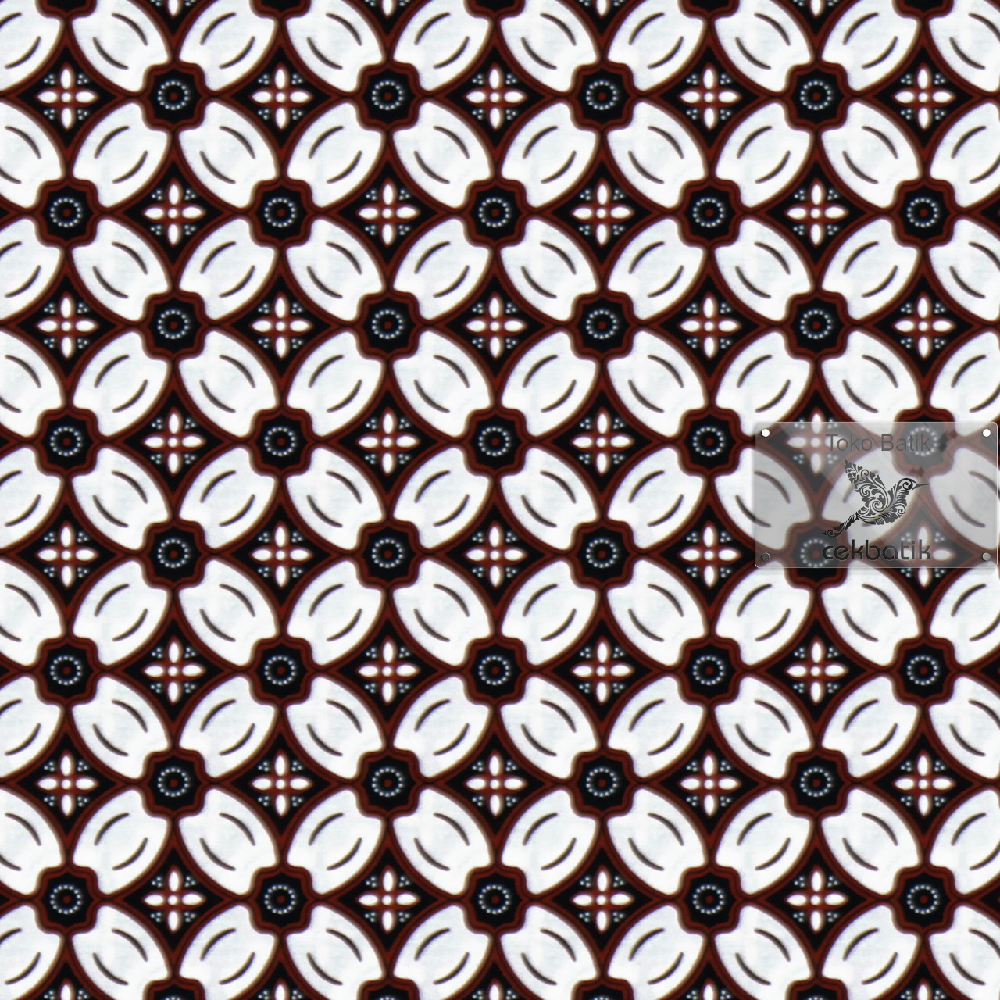
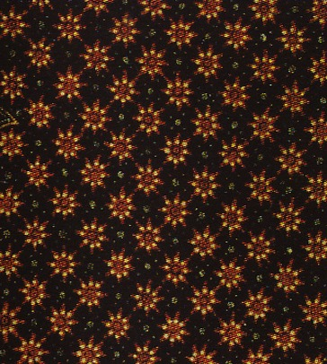
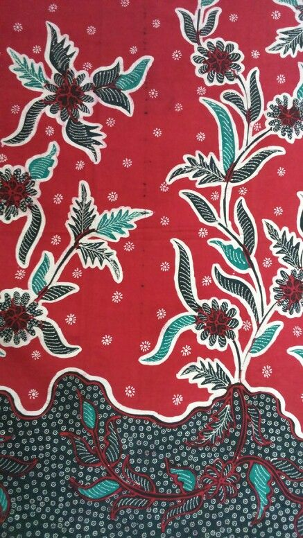
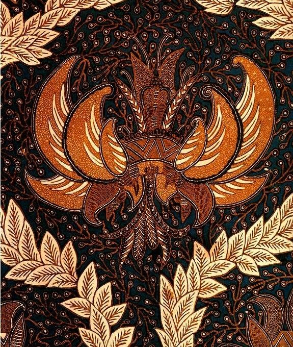
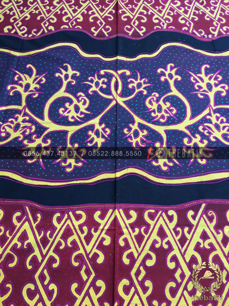

Parang Rusak
Motif klasik dari Solo yang melambangkan kekuatan

Mega Mendung
Batik khas Cirebon dengan motif awan

Kawung
Motif geometris yang melambangkan kesucian

Truntum
Motif yang melambangkan cinta yang tumbuh kembali

Batik Madura
Warna berani dengan motif bunga khas pesisir

Sekar Jagad
Motif yang melambangkan keindahan dunia

Sido Mukti
Batik pengantin yang membawa kebahagiaan

Batik Pekalongan
Perpaduan warna cerah khas pesisir utara

Batik Kontemporer
Batik modern dengan sentuhan desain kekinian